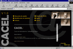

Como empezar a trabajar
Antes de comenzar a trabajar con CACEL es aconsejable leer esta ayuda para familiarizarse con el entorno de usuario.
Lo primero que se debe hacer es ejecutar el navegador Internet Explorer, que previamente debe estar instalado en el sistema. Desde dicho navegador se ha de abrir el archivo "index.htm", apareciendo, después de una breve presentación, la página principal desde la que se puede acceder prácticamente a todos los archivos que componen el sitio WEB.

- Itinerarios de estudio
Permite desplegar el listado con los enlaces a los diferentes circuitos que
componen CACEL.
Estos pueden ser elegidos bien por su denominación o bien por los conceptos
que el alumno desee trabajar.
El itinerario Evaluación es un modo particular de "por Circuitos",
en el que no está permitida la simulación y cuyo objetivo es
que el profesor pueda evaluar al alumno vía E-Mail
- Identificación de símbolos
Accede a un conjunto de juegos, que sirven para que el alumno identifique
los símbolos utilizados en los esquemas electrotécnicos en general.
- Enlaces
Colección de enlaces relacionados con la automatización industrial.
- Otros Recursos
Muestra un listado de libros de consulta relacionados con la automatización
industrial y un conjunto de catálogos, en formato informático,
de fabricantes de material electrotécnico.
- Ayuda
Permite abrir la página de ayuda desde la portada de CACEL
- Acerca de CACEL
Muestra el nombre de los autores de este desarrollo WEB y permite enlazar
con su página WEB y su dirección de correo electrónico.
- Cerrar
Cierra la ventana activa del navegador.